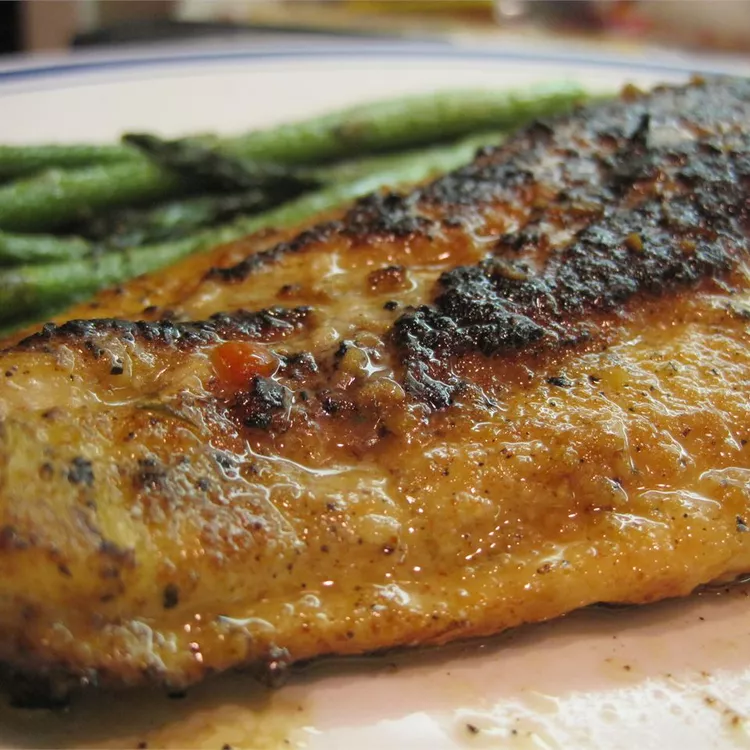

Blackend Catfish

Description
Cajun catfish served up with just the right touch of spices and flavor. This entree is perfect for a quick, excellent way to taste the unique flavor of catfish mixed with the traditional method of down south cooking, just without all the fat. Serve on top of white rice.
Ingredients
- 2 teaspoons cayenne pepper
- 2 teaspoons lemon pepper
- 2 teaspoons garlic powder
- 2 teaspoons salt
- 2 teaspoons pepper
- 1 pound catfish fillets
- 2 tablespoons butter
- 1 cup Italian-style salad dressing
Steps
- Preheat oven to 350 degrees F (175 degrees C). Lightly grease a medium baking dish.
- In a shallow, medium bowl, mix cayenne pepper, lemon pepper, garlic powder, salt and pepper.
- Brush both sides of catfish fillets with butter. Rub fillets with the cayenne pepper mixture on both sides.
- Bring a large pot of lightly salted water to a boil. Cook lasagna noodles in boiling water for 8 to 10 minutes. Drain noodles, and rinse with cold water.
- Heat a large heavy skillet over medium-high heat until really hot. Add fillets, and fry approximately 2 minutes on each side, until slightly blackened.
- Arrange blackened fillets in a single layer in the prepared baking dish, and coat with Italian-style salad dressing. Bake 30 to 35 minutes in the preheated oven, until fish is easily flaked with a fork.